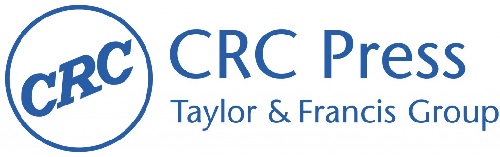

Get your ticket now!

Software developers and software researchers don't go to the same parties. While we've been building complex software for over seventy years and studying how it's built for nearly as long, most programmers don't know what software researchers have discovered, and most researchers aren't living with the problems developers would most like solved.
We can do better. On Wednesday, April 27, It Will Never Work in Theory is offering its first live event, a set of lightning talks from leading software engineering researchers on immediate, actionable results from their work. How can you do better code reviews (and avoid doing harmful ones)? What have we learned about effective remote onboarding during the pandemic? Does test-driven development actually make you more productive? And what does "productive" actually mean for a programmer? Our speakers will share what we know about these questions and why we believe it's true.
To ensure these presentations are accessible to as many people as possible, we are offering two sessions at the times shown below; each session will have 12 speakers in 3 hours (with plenty of time for questions). Tickets are CAD$50 for people in affluent countries and CAD$20 elsewhere, and are good for both sessions. All of the money raised will go to support Books for Africa.
| Session 1 | Session 2 | ||
| UTC | 08:00 - 11:00 | UTC | 17:00 - 20:00 |
| Auckland | 20:00 - 23:00 | Berlin | 19:00 - 22:00 |
| Melbourne | 18:00 - 21:00 | London | 18:00 - 21:00 |
| New Delhi | 13:30 - 16:30 | Rio de Janeiro | 14:00 - 17:00 |
| Berlin | 10:00 - 13:00 | Toronto | 13:00 - 16:00 |
| London | 09:00 - 12:00 | Vancouver | 10:00 - 13:00 |
|
Christoph Treude
Sebastian Baltes Maurício Aniche Mairieli Wessel Matthias Galster Alberto Bacchelli Neil Brown Davide Fucci Felienne Hermans Marian Petre Manuel Rigger Igor Steinmacher Andy Zaidman |
Alberto Bacchelli
Mairieli Wessel Marian Petre Maurício Aniche Paige Rodeghero Davide Fucci Mei Nagappan Brittany Johnson-Matthews Shane McIntosh Kelly Blincoe Catherine Hicks Denae Ford Robinson Katie Stolee Igor Steinmacher Peggy Storey |
||

Edited recordings of these lightning talks will be shared after the event in collaboration with Strange Loop, a multi-disciplinary conference that brings together the developers and thinkers building tomorrow's technology in fields such as emerging languages, alternative databases, concurrency, distributed systems, security, and the web.

This event is co-sponsored by CRC Press, a leading publisher in computer science, programming, software engineering, and data science. CRC will offer every attendee a £100 voucher toward the e-book of their choice from http://www.routledge.com. CRC Press is also interested in new book projects: please contact Randi Cohen at randi.cohen@taylorandfrancis.com to discuss any book ideas.
{{post.date | date: '%F'}}: {{post.title}}
Keywords: {{ post.categories | sort | join: ', ' }}
Reviewed by: {{ post.author }}